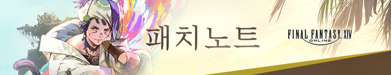
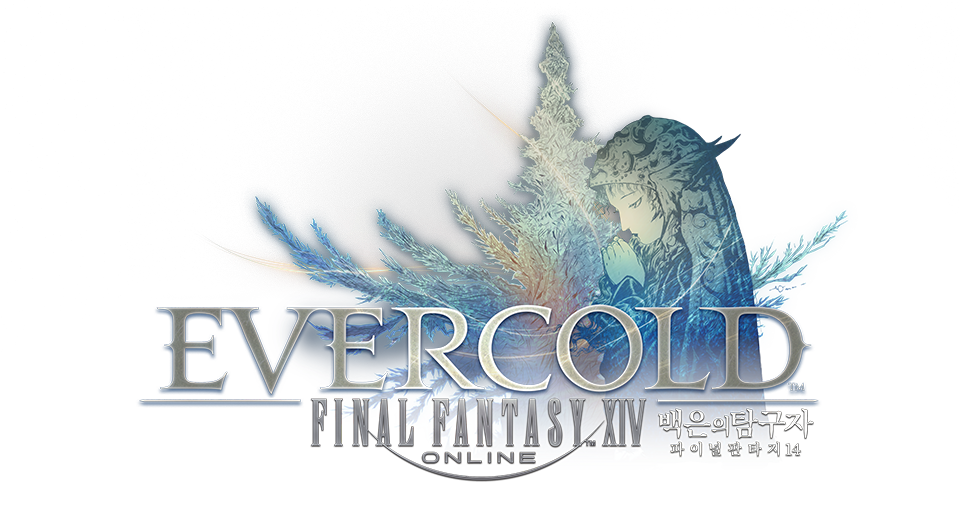
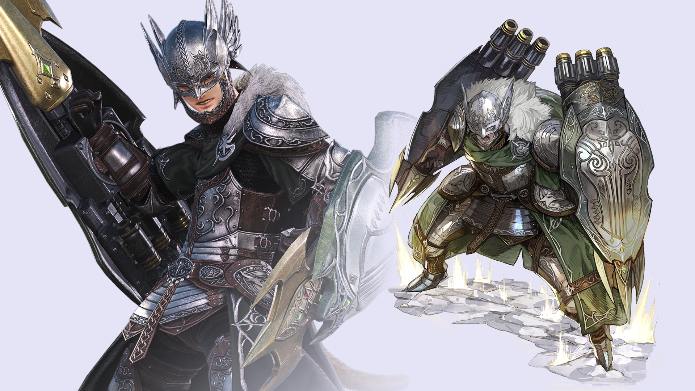
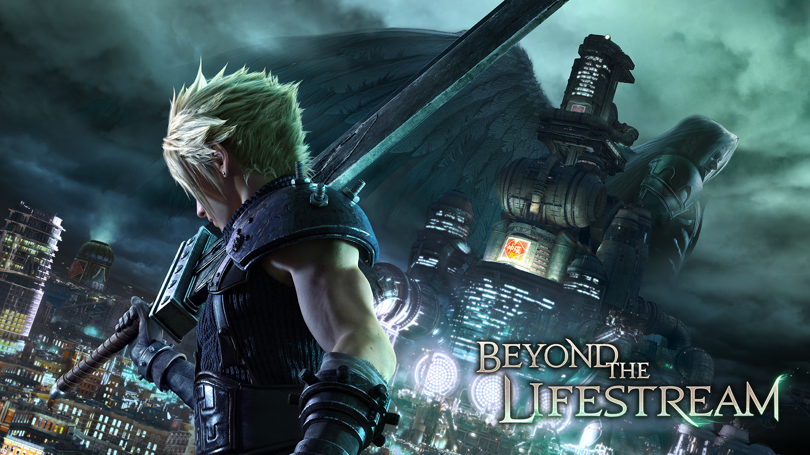
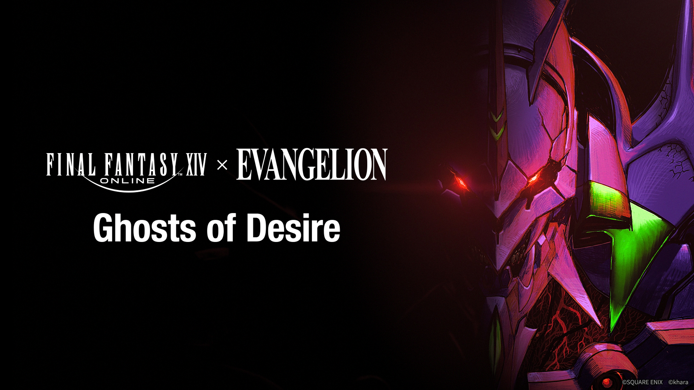

FF14 7.55 패치 총정리, 에버콜드 팬페스티벌 소식까지 온라인게임추천
파판14 콘텐츠 중에서도 힐디브랜드 라인은 레이드와는 결이 완전히 다른 코믹 탐정극으로 꼽히는 콘텐츠입니다. 근엄한 얼굴로 사건을 파고드는데 정작 벌어지는 일은 죄다 황당한 소동극인 그 텐션이 매번 웃기거든요(ㅋㅋ). 마침 지난 7월 28일 열린 파이널판타지14(FF14) 7.55 패치에 그 힐디브랜드 신규 에피소드가 들어왔길래, 오늘은 그 패치 내용부터 짚어볼게요.
7.55가 한국ㆍ글로벌 서버에 동시 적용된 지도 벌써 일주일이 지났는데요, 요즘 주변에서 할 만한 PC MMORPG 없냐고 묻는 분들이 꽤 있던데 마침 지난달 말 팬 페스티벌 발표 이후로 최근 반응이 좋은 온라인게임으로 다시 떠오른 게 파판14더라고요. 즐길 거리는 여전히 그대로 남아있고, 다음 확장팩 밑그림까지 한꺼번에 공개된 상태라 8월에 새로 발 담그기에도 늦지 않은 타이밍이에요. 오늘은 이 두 소식을 묶어서 정리해 드릴게요.

이미지 출처: FF14 공식 패치노트 페이지
오늘 직접 열어본 FF14 공식 패치노트 페이지예요 :)
1. 지난주 7월 28일에 열린 7.55 - 뭐가 한꺼번에 들어왔나
이번 7.55는 힐디브랜드 완결편ㆍ팬텀 웨폰 최종 강화ㆍ초승달 섬 북부편, 이 세 가지가 핵심 축입니다. 지난 6월 2일 7.51 절 요성난무 때 절 레이드 얘기를 이미 한 번 다뤘었는데, 이번엔 완전히 결이 다른 콘텐츠들이라 겹치는 부분 없이 새로 정리해봤어요.
| 구분 | 내용 |
|---|---|
| 돌아온 힐디브랜드 황금편 | 신규 부가 퀘스트 '하나로 이어지는 수사선'부터 시작, 우호부족 이야기 외전 황금편도 함께 |
| 팬텀 웨폰 최종 강화 | 잡 전용무기 마지막 단계 강화, 2단계 강화 시 능력치 선택 가능 |
| 초승달 섬: 북부편 | 신규 탐색형 전투 콘텐츠(1~8인), 지식 레벨 상한 20→40 상향, 서포트 잡 시스템 |
| 포크 타워: 마의 탑 | 1~48인 레이드, 입장에 지식레벨 40 필요 |
| 기타 | PvP 조정, 크리스탈라인 컨플릭트 시즌20 종료·21 시작, 신규 가구ㆍ헤어ㆍ감정표현 |
2. 돌아온 힐디브랜드 황금편 - 이번 패치 최고의 개그 콤비
이번 부가 퀘스트 라인은 사립탐정 '힐디브랜드'가 새로운 사건을 파고드는 '하나로 이어지는 수사선'부터 시작됩니다. 안 해보신 분들을 위해 짧게 설명하면, 겉으로는 근엄한 탐정 코스프레를 하면서 정작 벌어지는 사건은 죄다 황당한 소동극인 콤비물이에요. 조수 '넷쓰'와 함께 진지한 표정으로 터무니없는 의뢰를 물고 늘어지는 케미가 시리즈 내내 이어져왔고, 이번 편도 그 개그 텐션을 그대로 이어받았습니다.
여기에 우호부족 이야기 외전 황금편까지 함께 추가돼서 서브 퀘스트 볼륨이 꽤 두둑한데요. 무거운 메인 시나리오 사이사이에 이런 힐링용 콘텐츠가 껴 있는 게 파판14의 오랜 장점이라고 생각합니다.
시리즈 특유의 그 텐션이 이번에도 그대로 살아있는 모양입니다(ㅋㅋ). 코미디 좋아하시는 분들은 이번 패치에서 제일 먼저 챙기셔도 될 것 같아요.
이미지 출처: FF14 공식 패치노트 페이지
패치노트 페이지 퀘스트 섹션 배너예요. 이번 패치도 스토리 볼륨이 상당하더라고요.
3. 팬텀 웨폰 최종 강화 + 초승달 섬 북부편 - 엔드콘텐츠 유저 몫도 두둑
팬텀 웨폰은 이번 패치에서 각 잡 전용무기를 마지막 단계까지 강화할 수 있게 됐습니다.
2단계 강화 시점부터는 능력치를 직접 골라서 붙일 수 있다고 하니, 본인 플레이 스타일에 맞춰서 세팅을 조금씩 다르게 가져갈 수 있겠더라고요. 무기 파밍 콘텐츠를 꾸준히 돌리던 분들이라면 이번 패치가 그 마무리 지점인 셈이에요.
초승달 섬: 북부편도 이번 패치의 무게추 중 하나인데요. 지식 레벨 상한이 20에서 40으로 크게 올랐고, 1~8인까지 인원 규모를 자유롭게 조절할 수 있는 신규 탐색형 전투 콘텐츠가 열렸습니다. 여기에 딜러ㆍ탱커ㆍ힐러 역할이 아니어도 참여할 수 있는 서포트 잡 시스템까지 붙어서, 진입장벽이 한결 낮아진 느낌이에요. 지식레벨 40을 채우면 1~48인 대규모 레이드 '포크 타워: 마의 탑'까지 이어지니, 필드 콘텐츠 좋아하시는 분들은 이쪽부터 먼저 달려보세요.
지식레벨 40까지 채우면 마의 탑까지 쭉 이어져요.
4. 팬페스티벌 2026 베를린에서 터진 8.0 백은의 탐구자
지난 7월 말 독일 베를린에서 열린 팬 페스티벌 2026에서 스퀘어에닉스가 차기 확장팩 '백은의 탐구자(Evercold)'를 공식 발표했습니다.
출시 시기는 2027년 1월 예정으로만 발표됐고, 정확한 날짜는 아직 공개되지 않았어요. 국문 특설 사이트에 가보면 메인 키비주얼부터 신규 직업ㆍ콜라보 슬라이드까지 이미 쭉 올라와 있습니다.

이미지 출처: FF14 8.0 국문 특설 사이트
국문 특설 사이트 메인 키비주얼 - 여기서 백은의 탐구자를 직접 확인했어요.

이미지 출처: FF14 8.0 국문 특설 사이트
차기 확장팩 '백은의 탐구자' 공식 로고예요.
🛡️ 신규 직업 '바스티온(Bastion)' - 8.0 첫 공개 잡
8.0 신규 직업 중 처음으로 공개된 건 메인 탱커 '바스티온'입니다. 대형 실드를 양손에 하나씩, 총 두 개를 들고 싸우는 비주얼이 인상적이었는데요. 국문 특설 사이트 설명을 보면 북해의 '에어슬랜트 섬' 왕족이 대대로 계승해 온 고대 무예를 쓰는 직업이라, '마갑'이라 불리는 대방패 형태의 특수 무기를 다루는 콘셉트라고 하네요. 두 번째 신규 직업으로 예고된 물리 원거리 딜러는 다음 팬 페스티벌인 도쿄 행사에서 공개될 예정이라고 하니, 그건 그때 가서 또 정리해볼게요.

이미지 출처: FF14 8.0 국문 특설 사이트
대형 실드 두 개를 든 신규 탱커 '바스티온'이에요.
5. FF7 리메이크ㆍ에반게리온까지, 콜라보 레이드 라인업
8.0에는 콜라보 레이드도 두 종류나 예고됐는데요, 하나는 '라이프 스트림 너머(Beyond the Lifestream)'로 파이널판타지7 리메이크 3부작과 손잡은 8인 레이드입니다.

이미지 출처: FF14 8.0 국문 특설 사이트
클라우드가 등장하는 '라이프 스트림 너머' 콜라보 키비주얼.
다른 하나는 에반게리온과 손잡은 신규 연합 레이드 '욕망의 잔상(Ghosts of Desire)'입니다. khara, Inc.가 직접 감수를 맡았고, 게스트 아티스트로 '마에다 마히로'가 참여한다는 것도 공식적으로 확인됐고요. 여기에 캐릭터 액션 스킨(애니메이션 커스터마이징)과 캐릭터 커스터마이징 확대까지 함께 예고되면서, 신규 직업 하나 공개했을 뿐인데 앞으로 볼 게 계속 쌓이는 느낌입니다.

이미지 출처: FF14 8.0 국문 특설 사이트
에반게리온 콜라보 신규 연합 레이드 '욕망의 잔상'.
6. 그래서, 지금 파판14 시작ㆍ복귀하기 딱 좋은 이유
7.55가 열린 지 일주일이 지났는데도 아직 늦지 않았다고 보는 이유는 단순합니다. 새로 들어간 콘텐츠는 그대로 남아있고, 8.0 밑그림까지 이미 다 나와서 앞으로 뭘 하게 될지 흐름이 훤히 보이거든요. 콘텐츠가 끊길까 봐 망설일 이유가 없는 시점이에요.
혹시 파판14가 처음이시라면 무료 체험판으로 결제 없이 초반 스토리부터 가볍게 맛볼 수 있으니, 부담 없이 발부터 담가보시길 추천드립니다. 복귀 유저분들도 힐디브랜드 라인부터 슬슬 몸 풀면서 돌아오시면 좋을 것 같아요.
자주 묻는 질문
Q. FF14 7.55 패치는 언제, 어떻게 적용되나요?
2026년 7월 28일에 한국ㆍ글로벌 서버 동시 적용됐습니다. 별도 예약 없이 게임 실행 후 자동 업데이트로 받으시면 돼요.
Q. 7.55 다음 업데이트는 언제쯤인가요?
다음 정기 패치인 7.56이 2026년 9월 8일 적용될 예정입니다. Dawntrail 확장의 마지막 대형 콘텐츠 패치로, 메인 시나리오 퀘스트(MSQ) 완결과 함께 제한 잡 '비스트마스터'가 추가될 예정이라고 하니 그 뒤로 바로 8.0으로 이어지는 셈이에요.
Q. 신규ㆍ복귀 유저도 이번 패치 콘텐츠를 바로 즐길 수 있나요?
힐디브랜드 부가 퀘스트나 초승달 섬 북부편 같은 신규 콘텐츠는 각각 선행 조건이 있는 편이라, 처음이시라면 메인 시나리오부터 차근차근 따라가시는 걸 추천드립니다. 무료 체험판으로 초반 스토리를 먼저 확인해보실 수 있어요.
참고한 곳
· FF14 공식 - 패치 7.55 공지
· FF14 공식 - 패치 7.55 패치노트
· FF14 공식 - 8.0 백은의 탐구자 특설 사이트
· FF14 공식 홈페이지
본 포스팅은 '액토즈소프트'로부터 소정의 원고료를 지원받아 작성 됨.